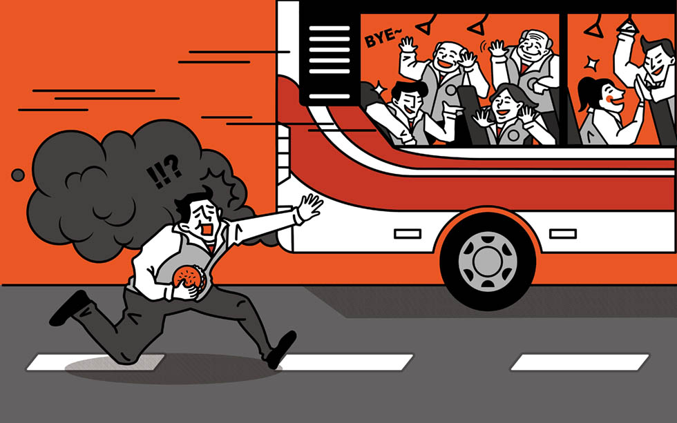

而突襲在院會（一、二、三讀）比較不可能，因為開會的人多，要召開會議的風聲容易傳出去，想要趁在場反對的委員較少的情況下趕緊通過法案較不可能。
集會遊行法修正案：此修正案欲將集會遊行的「許可制」改為「報備制」，2012年5月10日在內政委員會審查，當時審查的版本有民進黨立委鄭麗君版與台聯盟黨團兩個版本，內政部版還未送到立法院，國民黨委員要求內政部版要送來委員會再一起審，在野黨立委不同意，雙方僵持不下，主席陳其邁當天晚間6時宣布休息，晚間9時突然召開會議，在場的國民黨立委只有2人，在野黨則有4人，於是主席宣布集遊法審查完成，送交朝野協商，不過至今還沒有結果。
雖然內政部2014年8月已將政院版送交立法院，部長陳威仁也表示積極與各黨團溝通，希望能儘速完成修法，但目前政院版本還卡在一讀。
公投法：像上個會期（今年4月22日）審公投法，當天開會時，根據報導，國民黨立委上午因不願就降低提案門檻的條文進行表決，集體退席，下午會議只剩1名藍委出席，會議主席民進黨立委姚文智一鼓作氣，馬拉松式會議開到晚上，歷時十多個小時的會議，晚間通過決議，廢除被喻為「鳥籠公投」的「雙二一門檻」，以及最為民間詬病的「公投審議委員會」。
但該法案在黨團協商時，國民黨不出席會議，民進黨表示就逕赴表决，不過至今仍無法被程序委員會排上議程。
台電預算案：據報導，立法院經委會原2013年3月在審查台電102年度營業預算案，藍綠都進行甲級動員，但由於藍委都姍姍來遲，但在會議一開始，民進黨馬上先處理自己提的2項提案 —「退回102年度台電公司附屬單位預算」、「核四預算不得追加、政府應即停建核四，並據以修正102年度台電公司附屬單位預算，送立法院審議」。
當議事人員宣讀完議案，主席並詢問現場有無意見，在無人表示異議下，就全部通過，不到10分鐘主席就宣示散會。國民黨團則抗議整個議事處理程序混亂，提案內容還沒讓委員了解清楚，會再提出復議。
天．真．之．死 -『法案死於突擊』
突襲：
突襲就是趁在場的反對委員較少時趕緊開會做出決議，這樣的情況通常在委員會比較有可能發生，因為委員會開會的人少，只要三人在就可以決議，所以動員同黨委員開會決議較快速。而突襲在院會（一、二、三讀）比較不可能，因為開會的人多，要召開會議的風聲容易傳出去，想要趁在場反對的委員較少的情況下趕緊通過法案較不可能。
同樣死在這裡的法案：
集會遊行法修正案：此修正案欲將集會遊行的「許可制」改為「報備制」，2012年5月10日在內政委員會審查，當時審查的版本有民進黨立委鄭麗君版與台聯盟黨團兩個版本，內政部版還未送到立法院，國民黨委員要求內政部版要送來委員會再一起審，在野黨立委不同意，雙方僵持不下，主席陳其邁當天晚間6時宣布休息，晚間9時突然召開會議，在場的國民黨立委只有2人，在野黨則有4人，於是主席宣布集遊法審查完成，送交朝野協商，不過至今還沒有結果。
雖然內政部2014年8月已將政院版送交立法院，部長陳威仁也表示積極與各黨團溝通，希望能儘速完成修法，但目前政院版本還卡在一讀。
公投法：像上個會期（今年4月22日）審公投法，當天開會時，根據報導，國民黨立委上午因不願就降低提案門檻的條文進行表決，集體退席，下午會議只剩1名藍委出席，會議主席民進黨立委姚文智一鼓作氣，馬拉松式會議開到晚上，歷時十多個小時的會議，晚間通過決議，廢除被喻為「鳥籠公投」的「雙二一門檻」，以及最為民間詬病的「公投審議委員會」。
但該法案在黨團協商時，國民黨不出席會議，民進黨表示就逕赴表决，不過至今仍無法被程序委員會排上議程。
台電預算案：據報導，立法院經委會原2013年3月在審查台電102年度營業預算案，藍綠都進行甲級動員，但由於藍委都姍姍來遲，但在會議一開始，民進黨馬上先處理自己提的2項提案 —「退回102年度台電公司附屬單位預算」、「核四預算不得追加、政府應即停建核四，並據以修正102年度台電公司附屬單位預算，送立法院審議」。
當議事人員宣讀完議案，主席並詢問現場有無意見，在無人表示異議下，就全部通過，不到10分鐘主席就宣示散會。國民黨團則抗議整個議事處理程序混亂，提案內容還沒讓委員了解清楚，會再提出復議。
遊戲設計：關鍵評論網、Re-lab
資訊設計：Re-lab
法案整理：關鍵評論網 鄭少凡
資訊設計：Re-lab
法案整理：關鍵評論網 鄭少凡
SHARE：